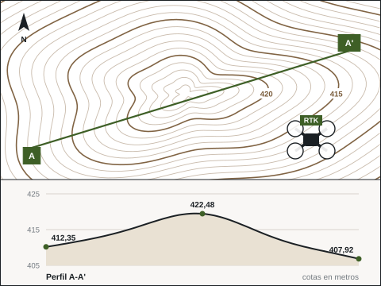
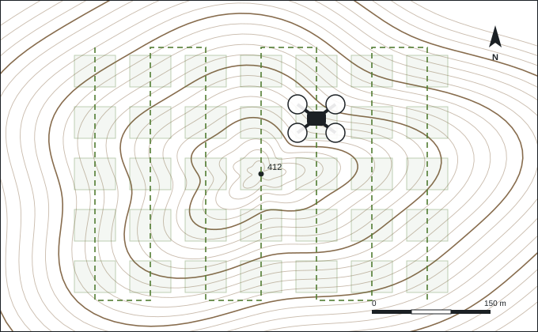
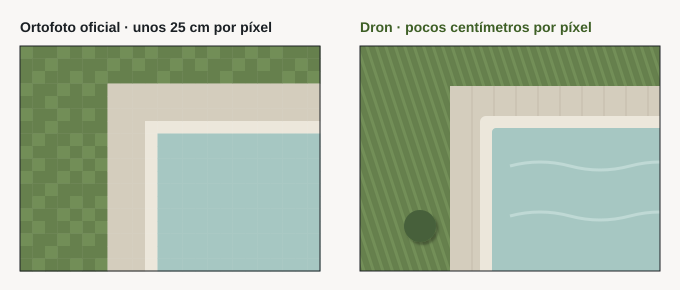

Mediciones con dron
Usamos el dron sobre todo para nivelaciones y curvas de nivel, y también cuando la ortofoto oficial se ha quedado antigua o no da el detalle que pide el trabajo. Volamos un DJI Mavic 3 con RTK, un sistema que corrige la posición de cada foto durante el vuelo.

Qué sacamos de un vuelo
Curvas de nivel
Con la equidistancia que pida el trabajo, es decir, la diferencia de altura entre una curva y la siguiente, y con la cota de cada una.
Nivelaciones y perfiles
Cotas y pendientes de una parcela, y perfiles del terreno a lo largo de la línea que haga falta.
Modelo del terreno
La forma del suelo en tres dimensiones, para medir pendientes y sacar perfiles.
Ortofoto de detalle
Una imagen aérea a escala, con la fecha del vuelo y bastante más detalle que la oficial.
Cómo se trabaja
El dron recorre la zona en pasadas y toma fotos que se solapan entre sí. Con esas fotos se calcula una nube de puntos del terreno (es lo que se llama fotogrametría), y de ella salen el modelo del terreno, las curvas y la ortofoto.
Gracias al RTK hay que medir menos puntos de apoyo, que son puntos marcados en el suelo para encajar el vuelo. La precisión final depende además de la altura del vuelo y de la comprobación en el terreno.


Lo que el dron no resuelve
- Bajo un arbolado denso el dron ve las copas, no el suelo, y ahí el modelo del terreno no es fiable.
- Un vuelo no tiene valor oficial por sí solo. Si la medición tiene que llegar a una escritura o al Registro, hará falta además el plano georreferenciado con su GML.
Para qué se usa
Lo usamos para las nivelaciones de parcelas y explotaciones, para ver una finca entera con detalle antes de preparar los planos de una segregación o un reparto, y para ver lo que se ha construido cuando no hay una ortofoto oficial reciente.
¿Qué terreno quiere medir?
Díganos dónde está el terreno, qué superficie tiene y para qué necesita la medición. Le diremos si compensa hacerlo con dron y, si es así, le pasaremos presupuesto.
- emiliocontadorbrito@gmail.com
- Calle Matilde Tagle Ortiz, 28, 5.º D, 06006 Badajoz